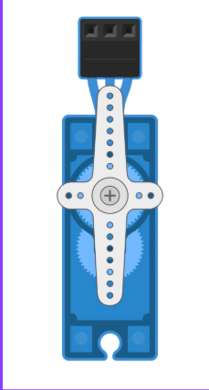
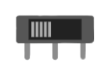
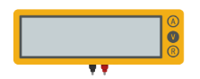

Anticipación
Preguntas para diálogo inicial:
- ¿Qué experiencias tienen con robótica educativa?
- ¿Por qué incluir robótica en el aula?
- ¿Qué saben o han escuchado sobre Tinkercad?
Preguntas para diálogo inicial:
|
La robótica permite desarrollar el pensamiento lógico, la creatividad, en sí, es una tecnología, ciencia o rama que estudia el diseño y construcción de máquinas capaces de desempeñar tareas realizadas por el ser humano o que requieren del uso de inteligencia. |
La robótica educativa es fundamental porque impulsa un aprendizaje activo y significativo al combinar experiencias físicas y mentales, permitiendo a los estudiantes aprender haciendo, de tal manera que familiariza a los estudiantes con tecnologías actuales para su desarrollo personal y profesional (Venegas et al., 2022).
TPbot Smart Car para micro:bit: Robot que al insertar la tarjeta micro:bit se convierte en un coche inteligente programable.
https://robotopia.es/kits-educativos/204-27-tpbot.html#/41-microbit_sn-solo_el_kit
LEGO Mindstorms: Plataforma educativa para construir y programar robots (LEGO Mindstorms, 2025).
VEX IQ: Plataforma ideal para competiciones escolares (VEX Robotics, s/f).
Tinkercad es una herramienta online y gratuita para crear modelos 3D de forma sencilla. Permite simular circuitos, modelar diseños y programar con bloques. Su interfaz es intuitiva, por lo que es ideal para estudiantes de nivel básico.
También tiene opciones como modelado para Minecraft o con estilo LEGO.
Ingresamos al link de la herramienta de Tinkercad, desde un perfil, aparece esta Figura 12 damos clic en iniciar sesión con Google.
Selecciona la cuenta a su preferencia.
Una vez seleccionada la cuenta, se debe dar clic en continuar.
Aparecerá la opción de elegir el país y la fecha de nacimiento y se debe dar clic en siguiente.
Clic en continuar.




La robótica y la simulación contribuyen a cerrar brechas digitales, promueven la inclusión y despiertan el interés por carreras tecnológicas desde edades tempranas (Figueroa, 2025).
Obra publicada con Licencia Creative Commons Reconocimiento Compartir igual 4.0